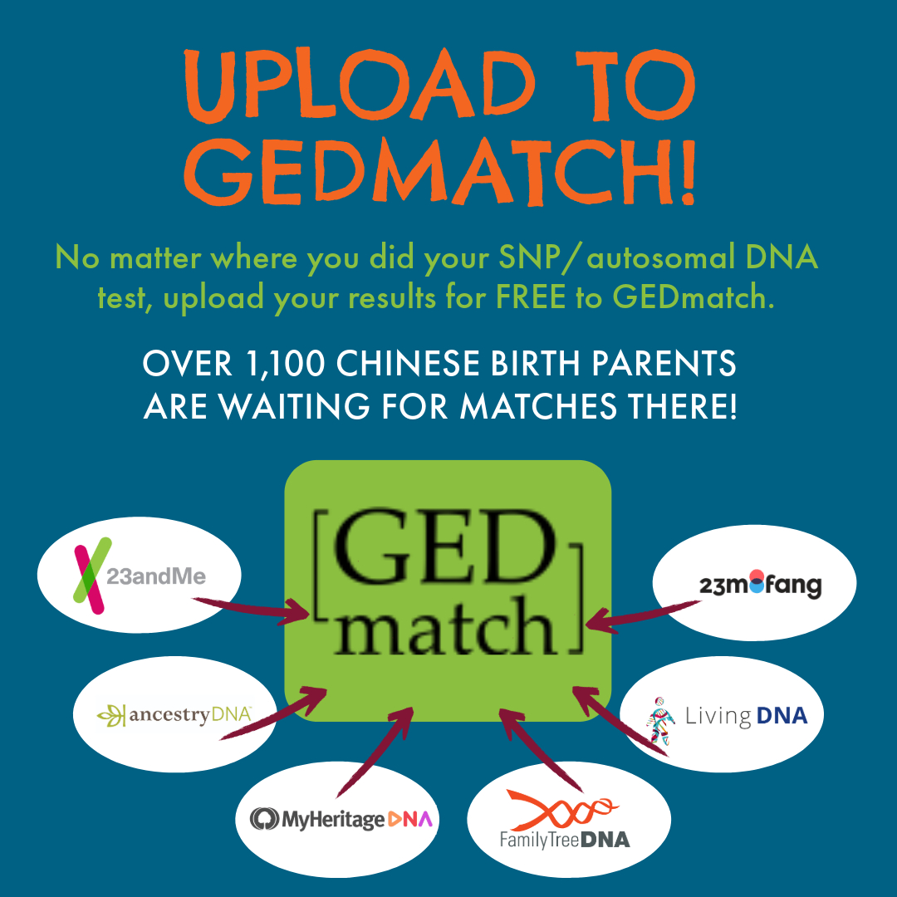

GEDmatch Day


Biological sisters Malia and Kaitlin, adopted separately from Hunan, China, found each other through DNA testing.
Welcome
Welcome to the GEDmatch Day website. This means you already did a DNA test or you're thinking about doing one. In both cases we're here to help you get the most out of your test.
There are many different reasons to test DNA. We will be focusing on finding relatives for Chinese adoptees. As not every adoptee will test with the same company and not all companies allow third-party uploads, this could cause you to miss out on matches. Here’s where GEDmatch comes in.
DNA Testing
Many international adoptees do DNA testing. Some do it out of curiosity or for health information. If you are searching for birth family, it is usually one of the first things you can do. There are multiple companies that do direct to consumer DNA testing like 23andMe or Ancestry. A DNA test analyzes your genetic code and compares it to other people's DNA. When there's a match, it means you share a common ancestor with that person.
The test itself is easy - you simply provide a sample of your DNA through a cheek swab or saliva sample. The sample is analyzed to identify markers in your genetic code. Those markers act like a fingerprint, unique to you and your relatives. The more DNA markers you have in common with someone, the more closely you're related. Like mentioned before not every adoptee tests with the same company and not all companies allow uploads. Therefore it's crucial to upload your test results to GEDmatch.
What is GEDmatch?
GEDmatch is a free website where people who have taken a direct-to-consumer DNA test can upload their raw DNA data to expand their search for genetic matches. Users download their DNA data files from testing companies like Ancestry, 23andMe, and FTDNA, then upload the files to GEDmatch. By combining data from multiple companies into one database, GEDmatch increases users' chances of finding DNA matches across testing platforms. The site processes the DNA files, adds them to its genealogical database, and provides tools for comparing matches and analyzing DNA further.
Did you know GEDmatch contains over 1100 Chinese birth families and thousands of adoptees who may potentially match to you as a sibling or close cousin?
Start with downloading your dna file from your testing company.
How to Download From the Following:
- 23andMe
- Ancestry
- MyHeritage
- FTDNA
How to Download From 23andMe
Company InstructionsHow to Download From Ancestry
Company InstructionsHow to Download From MyHeritage
Company InstructionsHow to Download From FTDNA
Company InstructionsHow to Upload to GEDmatch
After you have downloaded your DNA from the company you tested with then it is time to upload your DNA to GEDmatch. Directions on creating an account and how to upload can be found here.
How to Read GEDmatch Matches
For beginning users the most important column to check is the Gen column. The Gen column provides a rough estimate of the number of generations between you and the Most Recent Common Ancestor (MRCA) you and that match both share.
In the generation listing your parent or child is 1, an aunt or niece is about 1.5, a grandparent is 2. For cousins subtract one from the number, so if it shows generations of 4, the suggestion is 3rd cousin.
Another option is to look at the Total cm column. In this column you’ll find the total length of all the segments you share with your DNA match measured in centimorgans. This is the amount of DNA that you have in common with your match. Input the number into this webtool and it will predict your relationship to this match.
GEDmatch offers a variety of educational videos tailored for users at different skill levels. These videos serve as valuable resources to enhance your understanding of genetic genealogy. Whether you are just starting out or looking to deepen your knowledge, exploring these videos can provide you with insights and tips to make the most of your experience on the GEDmatch platform.
Need Help Uploading to GEDmatch?
Stay tuned : Saturday April 27th and Sunday April 28th
We will host live webinars all about using GEDmatch. It's free!
Katie Iles
Adoptee in Reunion Guest Speaker

Katie is a Chinese adoptee that grew up in Boston and currently lives in New York City. She is a creative writer and works at a Chinese nonprofit helping migrant families receive childcare. In her free time, she likes to explore the city and hang out with her black cat named Kage. She received her B.A. in Psychology from Hofstra University in 2016 and received her M.F.A. in Creative Nonfiction from Fairleigh Dickinson University in 2020. She was an Editorial Reader at the The Literary Review, and has been a participant of various writing workshops across the city.


Qiaofei, an adoptee from Zhejiang, China, discovered her biological parents and siblings through DNA testing.
What You Can Do to Help
Send a message to your Top 10 matches with the company you tested and tell them about GEDmatch. Refer them to this website. We have a little text for you to use.
Contact your travel group and tell them about GEDmatch and this website.
Remember every new upload to Gedmatch can contain a clue for you or someone else.
Script for Top 10 DNA Matches
Hi [Match’s Name],
I wanted to reach out because you are one of my top 10 DNA matches in this database and I was wondering if you’ve ever considered uploading your DNA results to GEDmatch?
We all have different reasons for DNA testing - I was adopted from China and would love to find my birth family [or change to include your reason]. GEDmatch expands your search beyond a single testing platform, increasing the chances of finding relatives you didn't know existed. With over 1,100 Chinese birth families registered there, the platform has been a beacon of hope for many looking to reunite with their roots.
Even if you were not adopted, having your DNA in GEDmatch would allow you to connect with biological relatives that may have used other testing platforms. You may even be able to provide assistance to someone else who is curious about their roots!
I uploaded my DNA results to GEDmatch in 2021 and it provided me with many answers I was looking for. [something about personal experience]
It is completely free to upload your data file there. You just have to download your raw data from [testing company] first. You can start your journey here: [insert GEDmatch link]. Let me know if you have any questions!
Wishing you the very best on this meaningful adventure.
Warm regards,
[Your Name]
gedmatchday.org
GEDmatch Day is a joint effort of...
The Nanchang Project
Nanchang Project exists to serve the community of Chinese adoptees who are searching for biological relatives in China. Our organization was founded in February 2018 by two adoptive moms with children from Nanchang, Jiangxi province. In the ensuing months, they traveled to China to publicize their search, and the Project quickly grew to represent adoptees from all areas of China. In October 2022, we welcomed our first adoptee in a leadership role as Co-Director. Today, Nanchang Project’s team has grown in size with members based all over the world. We are on track to become the first fully adoptee-led organization of its kind that focuses on reconnecting international adoptees with their roots and birth families in China. To date, we have made 50 matches between searching Chinese families and children who were adopted abroad and provided 300 DNA tests to birth relatives. Besides offering free DNA tests to Chinese families, our programming for adoptees include Nanchang Project trips to China, Origins Searches, Toutiao Article Program (TAP), document translation, community events, guidance, and more.

International Child Search Alliance
We’re an all-volunteer international group of adoptees and adoptive parents founded in November 2018. We offer a central source of information to help adoptees from China search for their birth families. We promote awareness in China of adoptees’ desire to know their birth families and the importance of DNA testing, primarily through province search posters shared widely on Chinese social media.
88icsa@gmail.com
The Roots of Love
The Roots of Love (ROL) is a volunteer-based initiative of adoptees and adoptive parents dedicated to helping Chinese adoptees who want to find their biological parents. It is based on the global humanitarian desire to reunite families that have been separated, due to a variety of personal and collective circumstances.
We believe that adoptees have the fundamental right to search for the parents from whom they were separated, and thus, possibly, replace the unknown of their birth by a family lineage. We would like to help adoptees fill a large gap in the makeup of their human identity.
Our mission is to contribute, one reconnected adoptee at a time, to a happier and more unified humanity. We believe that facilitating and expanding loving relationships between individuals, between families, and between nations is a key factor of collective evolution.
info@therootsoflove.org
Also-Known-As
Also-Known-As, Inc., was founded in 1996 out of a desire to create an organization that recognized and celebrated the community of people whose lives, through adoption, bridge nations, cultures and races. Our mission is to build a community that empowers the voices of adult international adoptees, while providing resources and space to acknowledge the loss of birth country, culture, language, and biological family. Also-Known-As, Inc. is a Federal 501(c)3 non-profit organization with an all volunteer Board of Directors.
alsoknownas.orginfo@alsoknownas.org